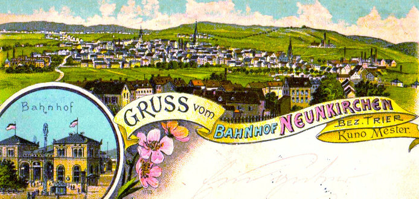
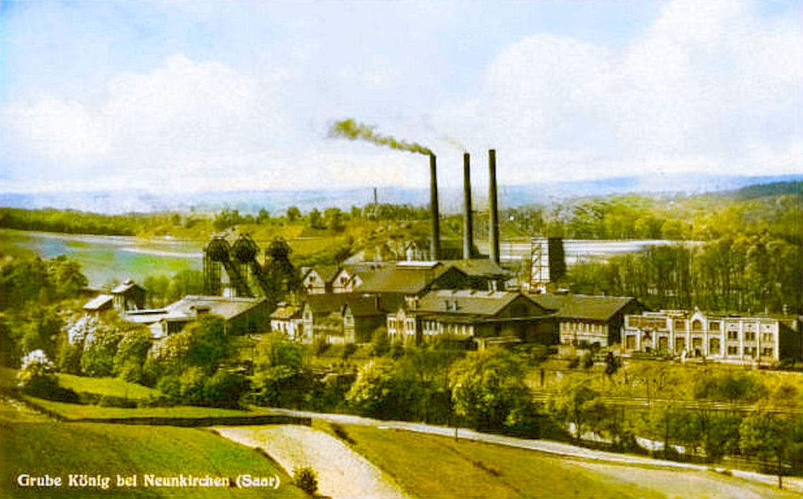
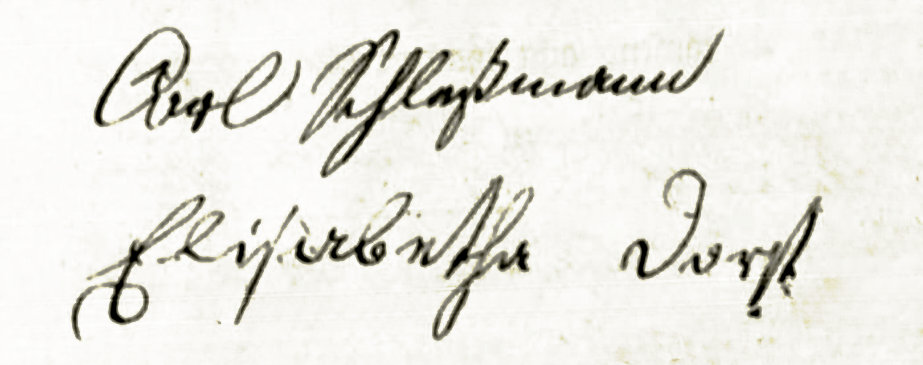
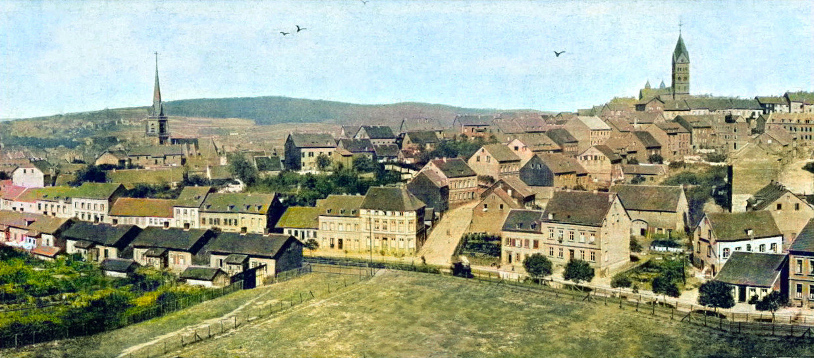
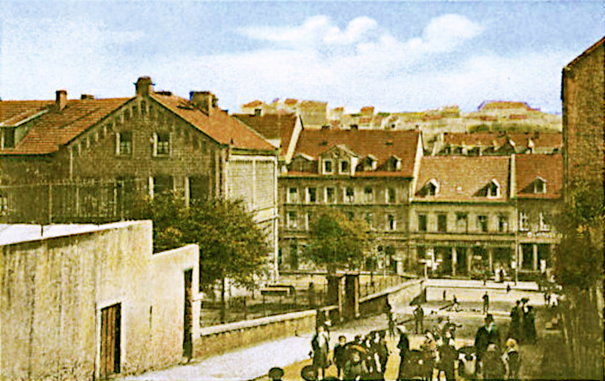
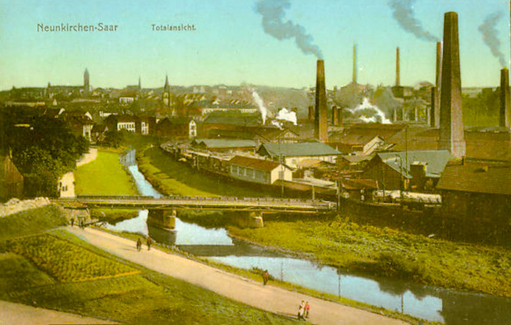

Gruss vom Bahnhof Neunkirchen

Grube König Neunkirchen
Die Familie Schleßmann Teil 4
Wenn die Unmassen von Rauch aus den Fabrikschornsteinen und Öfen nicht wären, könnte man den Ort idyllisch nennen.
- Richard Dehmel über Neunkirchen, 1883
Die Ära Karl Schleßmann
Unser Vorfahre Friedrich Karl Schleßmann, der sich Karl nannte, war ab 1838 der einzige Mensch mit dem Namen Schleßmann in Neunkirchen. Er war Schmied geworden, arbeitete nebenbei als Hüttenarbeiter und hatte seine eigenen Äcker und wahrscheinlich auch Ziegen und Hühner. Karl war ein starker Mann - in jeder Beziehung. Sein Enkel Christian konnte sich an die Schmiede erinnern, wo Funken sprühten und sein Großvater energisch und mühelos den schweren Hammer schwang.Karl hatte auch seinen eigenen Kopf: Er rührte kein Fleisch an und verzehrte nur, was selbst auf seinen Feldern angebaut hatte. Dies war sehr ungewöhnlich für eine Zeit, in der Fleisch als das wertvollste Nahrungsmittel galt.
Friedrich Karl Schleßmann und Maria Ecker
Am 19. Mai 1840 heiratete Karl in Neunkirchen im Alter von 27 Jahren die fünf Jahre jüngere Elisabetha Dorst (1817-1879), die Tochter des Ackerers Johann Jacob Dorst (1774-1836) und seiner Frau Maria Wilhelmina Wagner (1775-1847). Karl und Elisabetha hatten sieben Kinder, von denen zwei früh verstarben.Die Familien Dorst und Wagner gehörten zu den ältesten Familien in Neunkirchen und waren daher bereits mit sämtlichen anderen alteingesessen Familien verwandt. Karl, und vor allem seine Kinder, die vorwiegend in weitere "alte" Familien einheirateten, hatten so eine ganze Heerschar von Verwandten in ihrem Heimatort. Die typischen Neunkircher Namen, wie Anschütz, Eisenbeis, Hollinger, Leibenguth, Russi, Schmelzer, Werner, Wolfanger und Zwalla finden sich in unserem Stammbaum.
Bei den Eheschliessungen zu jener Zeit waren üblicherweise nahe Verwandte der Brautleute die vier Taufzeugen. Da Karl Schleßmann keine unmittelbaren Verwandten hatte, drückten sich seine beiden Zeugen etwas vage aus:: "Christian Anschütz, Schreiner, 59 Jahre, verwandt mit den Brautleuten" und "Jacob Leibenguth, Ackerer, 64 Jahre, verwandt mit den Brautleuten".
Christian Anschütz war der Sohn von Karls Großtante Alexandrina Kirsch, die mit Philipp Anschütz verheiratet war, also sein Großcousin. Jacob Leibenguth war nur mit der Braut verwandt.

Während die Kinder von Karl und Elisabetha aufwuchsen, wuchs auch Neunkirchen, und zwar rasant: Im
Jahre 1840 hatte der Ort 2144 Einwohner, 1880 schon 15423 und 1925 waren es 40429. Dieser Zustrom
war der Eisenhütte zu verdanken - "Geh uff die Hidd, Bub, dort bischde gudd unner" war und
blieb der beste Ratschlag für junge Männer - und ab 1820 gab es auch das Steinkohlenbergwerk, die Grube
König, die zahlreiche Arbeiter mit ihren Familien anzog. Verstärkt wurde der Effekt durch den Bau der Eisenbahn. Neunkirchen bekam seinen ersten Bahnhof im Jahre 1852 und war von nun an mit der Welt verbunden.
Unterschrift von Karl und Elisabetha bei der Heirat
Neunkirchen zu jener Zeit war eine Mischung aus ständig wachsenden Industrieanlagen und vollkommen unkoordiniertem Häuserbau für die Arbeiter. Es bildeten sich im Laufe der Zeit zwei "Parallel-Welten" heraus: Die protestantischen "alten" Familien und die "Zugezogenen", bei denen es sich meistens um Katholiken aus ländlichen Regionen handelte. Die Herren Stumm waren evangelisch und bevorzugten evangelische Mitarbeiter für die Leitungspositionen.
Die alteingesessenen Familien profitierten auch in anderer Hinsicht von der Situation, denn sie waren die Handwerker und Eigentümer der Geschäfte für den täglichen Bedarf, und vor allem Besitzer der unproportional großen Anzahl von Gaststätten, in denen sich die Hütten- und Bergarbeiter "entspannten" und ihr schwer verdientes Geld ausgaben.

Die fünf Kinder von Karl und Elisabetha blieben in Neunkirchen und gründeten dort ihre jeweiligen Familien. Die beiden älteren Söhne, Karl und Christian, wurden Schmied wie ihr Vater. Der jüngere Sohn Jakob wählte das Schreinerhandwerk. Die Tochter Louise heiratete einen Bergmann und Wilhelmine einen Schreiner.
Alte Ansicht von Neunkirchen
Die Mutter Elisabetha Schleßmann geb. Dorst starb am 10. März 1879 in Neunkirchen. Ihr Mann Karl überlebte sie um 21 Jahre. Er kam 28. Juni 1900 durch einen Unfall beim Einspannen eines Pferdes ums Leben.
» Friedrich Karl Schleßmann (1813–1900)
heiratete Elisabetha Dorst (1817–1879) in Neunkirchen 19.05.1840
heiratete Elisabetha Dorst (1817–1879) in Neunkirchen 19.05.1840
und sie hatten die folgenden Kinder:
| Friedrich Karl Schleßmann | 12.05.1841 – *Neunkirchen |
25.09.1899 †Neunkirchen |
h. Maria Ecker in Neunkirchen 10.11.1868 | |
| Christian Schleßmann | 23.07.1844 – *Neunkirchen |
24.05.1912 †Neunkirchen |
h. Wilhelmine Werner in Neunkirchen 02.04.1874 | |
| Elisabeth Louise Schleßmann | 29.07.1847 – *Neunkirchen |
02.03.1886 †Neunkirchen |
h. Friedrich Brück in Neunkirchen 12.01.1867 | |
| Christian Friedrich Schleßmann | 10.05.1850 – *Neunkirchen |
23.06.1852 †Neunkirchen |
(2 Jahre alt) | |
| Henriette Wilhelmine Schleßmann | 09.03.1854 – *Neunkirchen |
unbekannt †unbekannt |
h. Christian Philipp Hollinger in Neunkirchen 05.03.1874 | |
| Georg Jakob Schleßmann | 16.01.1857 – *Neunkirchen |
02.04.1938 †Neunkirchen |
h. Caroline Fries in Nohfelden 01.07.1882 | |
| Elisabetha Caroline Schleßmann | 18.12.1859 – *Neunkirchen |
26.12.1861 †Neunkirchen |
(2 Jahre alt) |
» Friedrich Karl Schleßmann jun. und Maria Ecker
Friedrich Karl Schleßmann wurde am 12. Mai 1841 geboren. Er war Schmied, Fördermaschinist und Zechenschmied im Bergwerk Neunkirchen. Am 10. November 1868 heiratete er Maria Ecker (1848-1929), die Tochter des Schreiners Heinrich Ecker 1811–1892 und Anna Maria Russy (1812–1892) aus Limbach bei Bexbach. Die beiden hatten acht Kinder.Friedrich Karl starb am 25. September 1899, neun Monate vor seinem Vater "nach kurzem Krankenlager". Seine Frau Maria überlebte ihn um 30 Jahre und zog irgendwann zu ihrer Tochter Luise nach Bildstock. Sie starb am 24. Dezember 1929 in der Wohnung ihres Schwiegersohnes Richard Gerhard. Sie wurde aber, wie alle Familienmitglieder, auf dem Hauptfriedhof Scheib in Neunkirchen bestattet.
» Friedrich Karl Schleßmann (1841–1899)
heiratete Maria Ecker (1848–1929) in Neunkirchen 10.11.1868
heiratete Maria Ecker (1848–1929) in Neunkirchen 10.11.1868
und sie hatten die folgenden Kinder:
| Christian Schleßmann | 05.11.1869 – *Neunkirchen |
03.08.1870 †Neunkirchen |
(9 Monate alt) | |
| Friedrich Karl Schleßmann | 05.11.1869 – *Neunkirchen |
23.04.1870 †Neunkirchen |
(5 Monate alt) | |
| Friedrich Karl Schleßmann | 16.05.1872 – *Neunkirchen |
23.08.1944 †Neunkirchen |
h. Frieda Elisabetha Münch in Neunkirchen 1896 h. Katharina Weingardt in Neunkirchen 07.02.1907 |
|
| Karl Friedrich Schleßmann | 27.10.1874 – *Neunkirchen |
06.11.1957 †Homburg |
h. Emma Becker in Neunkirchen 30.09.1899 | |
| Elisabeth Maria Schleßmann | 13.12.1876 – *Neunkirchen |
01.03.1917 †Neunkirchen |
h. Andreas Jakob Eisenbeis in Neunkirchen 14.05.1895 | |
| Wilhelmine Schleßmann | 17.11.1878 – *Neunkirchen |
08.12.1878 †Neunkirchen |
(1 Jahr alt) | |
| Elisabeth Louise Schleßmann | 15.02.1883 – *Neunkirchen |
nach 1952 †Bildstock |
h. Heinrich Dietrich | |
| Luise Schleßmann | 06.11.1887 – *Neunkirchen |
1947 †Bildstock |
h. Richard Gerhardt in Friedrichsthal 29.08.1912 |

Wellesweilerstrasse Neunkirchen
» Elisabeth Louise Schleßmann und Friedrich Brück
Louise Schleßmann, geboren am 29. Juli 1847, ignorierte die unsichtbare Trennlinie zwischen den Konfessionen in Neunkirchen und heiratete einen katholischen Bergmann: Friedrich Brück (1841-1906), den Sohn des Bergmanns Nicolaus Brück (1817-1882), der aus Monzelfeld bei Bernkastel kam und die aus Wiebelskirchen stammende Sophie Catharina Gräser geheiratet hatte. Louise und Friedrich hatten vier Kinder, drei Jungen und ein Mädchen. Louise starb am 2. März 1886 und ihr Mann am 5. April 1906.
» Elisabeth Louise Schleßmann (1847–1886)
heiratete Friedrich Brück (1841–1906) in Neunkirchen, 12.01.1867
heiratete Friedrich Brück (1841–1906) in Neunkirchen, 12.01.1867
und sie hatten die folgenden Kinder:
| Friedrich Brück | 21.01.1869 – *Neunkirchen |
1938 †Reckershausen |
h. Maria Koch in Neunkirchen, 04.07.1893 | |
| Karl Brück | 05.06.1871 – *Neunkirchen |
17.10.1943 †Saarbrücken |
h. Maria Kleber in Völklingen 06.06.1900 | |
| Sophia Brück | 22.08.1873 – *Neunkirchen |
24.01.1943 †Berlin |
h. Ernst Stumm um 1895 | |
| Adolf Brück | 15.05.1877 – *Neunkirchen |
03.06.1877 †Neunkirchen |
(19 Tage alt) |
» Henriette Wilhelmine Schleßmann und Christian Philipp Hollinger
Wilhelmine Schleßmann wurde am 9. März 1854 geboren und heiratete 1874 ihren Großcousin Christian Philipp Hollinger, geboren 1848, der von Beruf Schreiner war. Er war der Sohn des Ackerers und Fuhrunternehmers Christian Hollinger und seiner Frau Louise Catherine Werner. Louise Catherine war die Schwester von Johann Valentin Werner, dem Vater von Wilhelmine Werner, die mit Henriettes Bruder Christian Schleßmann verheiratet war. Das Paar hatte drei Kinder.Die Familie wanderte nach Amerika aus. Christian Hollinger kam ein paar Monate vor seiner Frau und seinen Töchtern am 28. November 1882 auf dem Schiff "Pennland" in New York an. Wilhelmine erreichte mit ihren Mädchen New York am 21. Juli 1883 auf der "Switzerland", die von Antwerpen gestartet war. Sie waren auf dem Weg nach Chicago und lebten später in Cook, Illinois.
Wilhelmine starb am 25. November 1886 in Cook. Ihr Mann Christian heiratete 1888 ein zweites Mal. Die jüngste Tochter Bertha wurde Krankenschwester. Was aus den beiden anderen Schwestern wurde, lässt sich derzeit nicht ermitteln.
» Henriette Wilhelmine Schleßmann (1854–1886)
heiratete Christian Philipp Hollinger (1848–) in Neunkirchen 05.03.1874
heiratete Christian Philipp Hollinger (1848–) in Neunkirchen 05.03.1874
und sie hatten die folgenden Kinder:
| Wilhelmine Hollinger | 08.11.1875 – *Neunkirchen |
|||
| Katharina Hollinger | 07.03.1877 – *Neunkirchen |
|||
| Bertha Hollinger | 22.03.1879 – *Neunkirchen |
» Georg Jakob Schleßmann und Karoline Fries
Jakob Schleßmann wurde am 16. Januar 1857 geboren und starb am 2. April 1938. Von Beruf war er Schreiner.Am 1. Juli 1882 heiratete er in Nohfelden Karoline Fries (1859–1833), die älteste Tochter des Schreiners Johann Jacob Fries und seiner Frau Caroline Eifler aus Sötern, einem "ansehnlichen Dorf bei Birkenfeld", wie ein Zeitgenosse es beschrieb. Zwischen der Familie Fries und den Schleßmanns gab es eine Verbindung: Die Lichtenbergers. Charlotte Lichtenberger, die Mutter unseres Verwandten Carl Lichtenberger (1796–1883) lebte neben der Schreinerei Fries in Sötern. Jacob Fries meldete als junger Mann ihren Tod im Jahre 1856.

Jakob und Karoline hatten vier Töchter, von denen die erste, Ida, nur ein paar Monate alt wurde. Ida Elisabeth, die zweite Tochter, war mit dem Kaufmann Ludwig Leibenguth (1881-1950) verheiratet und hatte einen Sohn. Die Familie wohnte in der Wellesweilerstr. 87 in Neunkirchen.
Blick auf Neunkirchen
Die Tochter Louisa (1889–1964) blieb unverheiratet. Bertha, die jüngster der Töchter, war mit dem Stadtinspektor Eduard Gerard (1881–1948), der ihren Vetter Christian Schleßmann bei der Erforschung der Familiengeschichte unterstützte. Bertha und Eduard hatten keine Kinder.
Im Jahre 1831 liess Jacob Schleßmann auf dem alten evangelischen Friedhof (Hauptfriedhof Scheib) eine schöne Familiengrabstätte errichten. Sie war von einem eisernen Gitterauf einem Steinsockel umgeben.
» Georg Jakob Schlessmann (1857–1938)
heiratete Caroline Fries (1859–1933) in Nohfelden 01.07.1882
heiratete Caroline Fries (1859–1933) in Nohfelden 01.07.1882
und sie hatten die folgenden Kinder:
| Ida Schlessmann | 15.04.1885 – *Neunkirchen |
13.11.1885 †Neunkirchen |
unverheiratet | |
| Ida Elisabeth Schlessmann | 25.09.1886 – *Neunkirchen |
18.10.1946 †Neunkirchen |
h. Ludwig Leibenguth in Neunkirchen 21.09.1908 | |
| Louisa Schlessmann | 08.02.1889 – *Neunkirchen |
24.11.1964 †Neunkirchen |
unverheiratet | |
| Bertha Katharina Schlessmann | 13.06.1894 – *Neunkirchen |
06.11.1946 †Neunkirchen |
h. Andreas Eduard Gerard in Neunkirchen 18.09.1922 |
Unser Vorfahre Christian Schleßmann war mit Wilhelmine Werner verheiratet. Die Kinder der beiden waren die letzten Schleßmanns, die in Neunkirchen aufwuchsen. Eine neue Ära hatte begonnen.
» Zu Teil 5 Christian und Wilhemine Schleßmann
» Teil 1 Peter und Anna Schleßmann
» Teil 2 Christoph und Louisa Schleßmann
» Teil 3 Peter und Philippina Schleßmann
Teil 4 Karl und Maria Schleßmann
Kontakt
Friederike Schneider (geb. Schleßmann)basehubb @ gmail.com